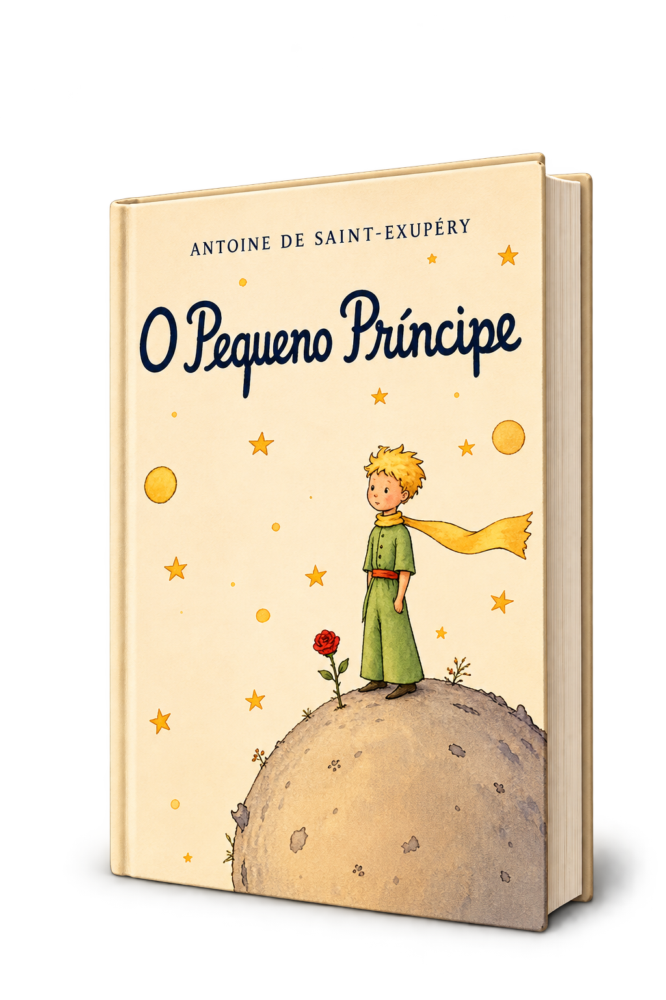
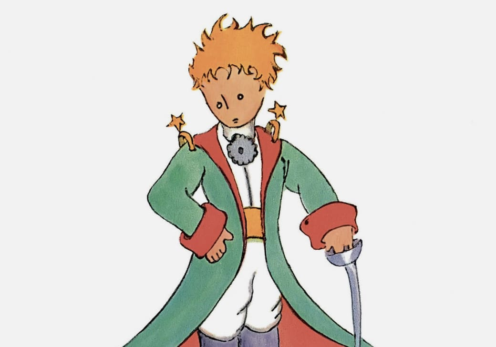
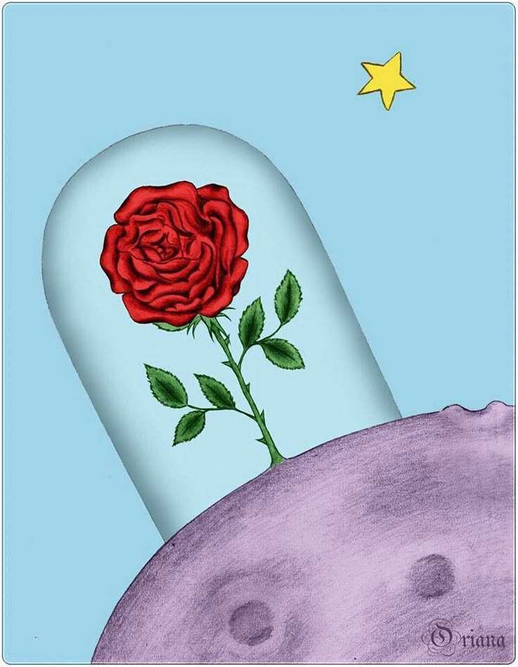
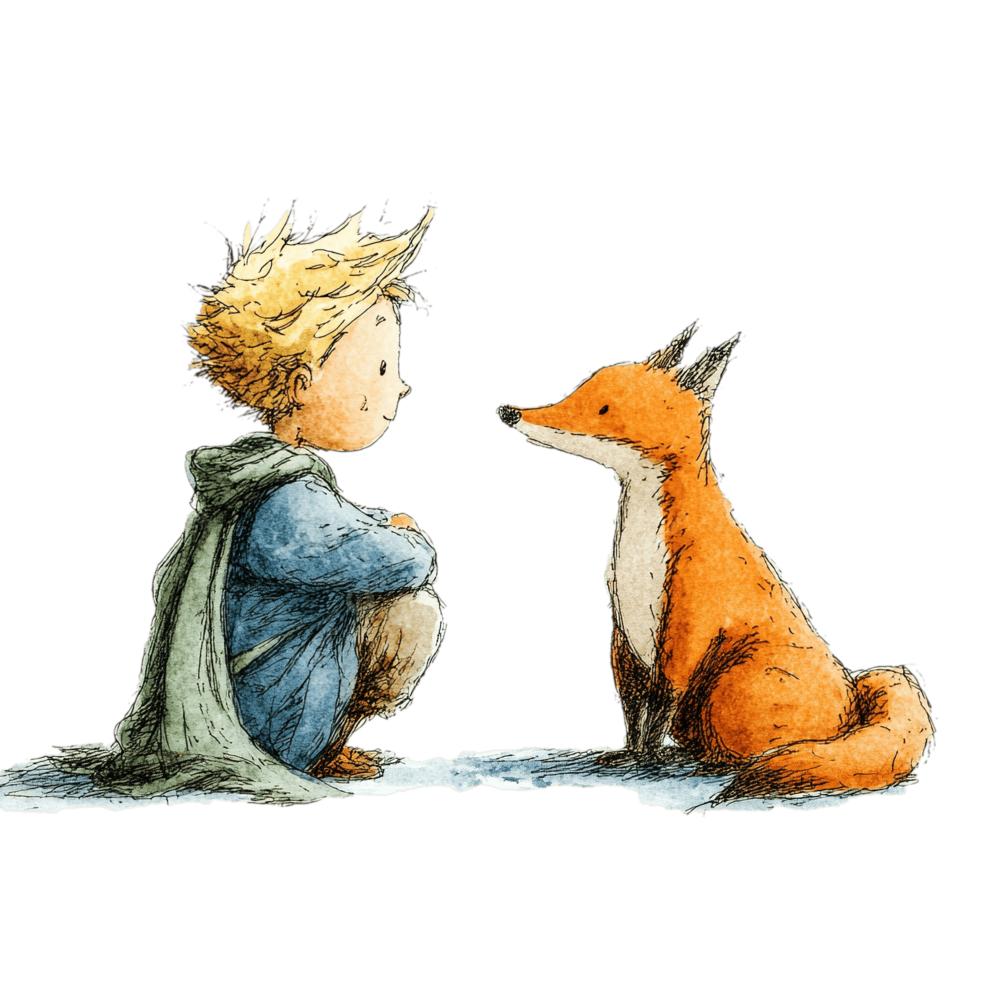

Sobre o Livro

O Pequeno Príncipe é uma das obras literárias mais conhecidas e traduzidas do mundo. Embora tenha formato de conto infantil, apresenta reflexões sobre a vida, a inocência, o amor e a amizade.
"O essencial é invisível aos olhos."
O Autor
Antoine de Saint-Exupéry (1900–1944) foi um escritor e piloto francês. Trabalhou em rotas de correio aéreo e suas experiências como aviador influenciaram suas obras.
Em 1935, sofreu um acidente de avião no Deserto do Saara. Essa experiência inspirou parte do cenário de O Pequeno Príncipe.
Garanta o seu Livro
Quer se emocionar com essa história inesquecível ou presentear alguém especial? Adquira já o livro físico ou digital!
Comprar na AmazonEnredo da História
1. A Queda no Deserto
Um aviador sofre uma pane no motor e cai no Deserto do Saara, onde conhece um garoto misterioso.
2. O Asteroide B-612 e a Rosa
O príncipe conta sobre seu pequeno planeta, seus vulcões e uma rosa muito especial.
3. A Viagem pelos Asteroides
Ele visita diferentes planetas e conhece adultos que representam comportamentos humanos.
4. A Raposa
Na Terra, conhece uma raposa que ensina o verdadeiro significado de criar laços.
5. A Despedida
O príncipe enfrenta uma despedida misteriosa e deseja retornar ao seu planeta.
Principais Personagens

O Pequeno Príncipe
Representa a inocência e a curiosidade.

A Rosa
Simboliza o amor e a vulnerabilidade.

A Raposa
Ensina sobre amizade e responsabilidade.
Os Asteroides e os Adultos
Asteroide 325 — O Rei
Representa o poder e o autoritarismo.
Asteroide 326 — O Vaidoso
Representa a necessidade de receber elogios.
Asteroide 327 — O Bêbado
Representa um ciclo de comportamentos sem sentido.
Asteroide 328 — O Homem de Negócios
Representa o materialismo e a ganância.
Asteroide 329 — O Acendedor de Lampiões
Representa a rotina e o cumprimento de ordens.
Asteroide 330 — O Geógrafo
Representa o conhecimento sem experiência prática.
"Tu te tornas eternamente responsável por aquilo que cativas."
O Pequeno Príncipe
Resumo da História
O livro O Pequeno Príncipe, escrito por Antoine de Saint-Exupéry, conta a história de um aviador que sofre um acidente no deserto e conhece um menino vindo do asteroide B-612. O Pequeno Príncipe conta sobre sua rosa, que ele amava, mas não conseguia compreender. Durante suas viagens por outros planetas, conhece personagens que representam diferentes comportamentos dos adultos. Ao chegar à Terra, conhece uma raposa, que lhe ensina o verdadeiro significado da amizade, do amor e dos laços afetivos. Assim, ele percebe que sua rosa é especial porque dedicou tempo e carinho a ela. No final, sente saudade e deseja voltar ao seu planeta. A principal lição do livro é que devemos valorizar as pessoas que amamos, pois o essencial é invisível aos olhos e só pode ser sentido pelo coração.